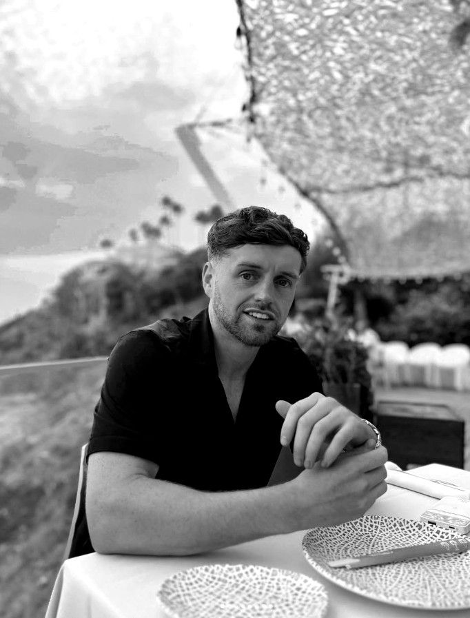
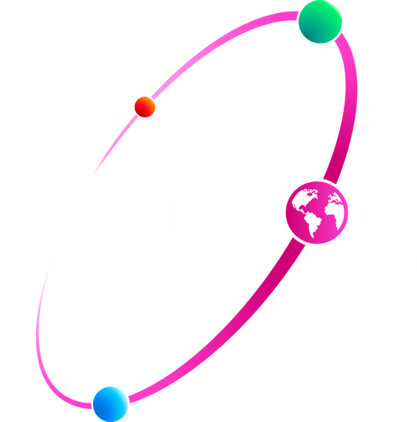
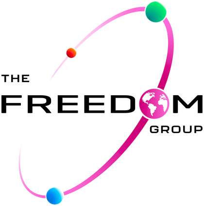

Founder of Freedom Group
From one unit to a group in motion.
Bury, Greater Manchester. August 2021. One director, one address, and a sector that does not hand anything to newcomers.
The register records it plainly: Freedom Fire & Safety Ltd, company number 13589467, incorporated 27 August 2021, sole director, registered to Unit 19 on the Pilsworth Industrial Estate in Bury. Tom Letcher was twenty-five.
The business sits in an unglamorous corner of the economy where the consequences of cutting corners are measured in lives. Extinguishers that have not been serviced. Alarm panels nobody has tested. Risk assessments written to be filed rather than acted upon. It was built on the opposite proposition: certified work, documented properly, that stands up when an inspector or an insurer asks.
Tom to supply — the genuine beginnings The chapter needs your detail, not a summary. The first premises and what it actually looked like. The first stock you bought and what it cost. The first order and who it was for. What you were doing before August 2021, and why you started rather than stayed employed.What had to exist behind the growth before the growth could happen.
Rather than resell from a wholesaler and compete on price, the company went upstream: vetting its own suppliers, specifying its own products, and tracking every consignment from factory floor to the UK warehouse through a system built in-house. That vertical reach is unusual for an independent firm of this size.
Extinguishers and emergency lighting — supply, installation, servicing and annual maintenance, certified at every visit.
Fire alarm systems designed, installed, commissioned and maintained, so a building warns people before anyone smells smoke.
Fire risk assessments in line with the Fire Safety Order, plus warden and extinguisher training, and the records that evidence both.
Clients range from landlords and property managers to schools, care homes, offices, retail, warehousing and manufacturing — and, unusually for the sector, private homeowners as well.
Tom to supply — the operational build Warehouse square footage and when you moved in. Container volumes and shipping cadence. Number of SKUs. Which sales channels you run and when each opened. Headcount by year.Every figure states the period it covers and what it actually measures, with the evidence one click away. Nothing here is a vanity statistic.
Freedom Fire & Safety Ltd registered in England and Wales, sole director appointed on the day of incorporation.
Companies House register, company number 13589467. Incorporation date and officer appointment are matters of public record.
The founder's age now — five years after he incorporated the company at 25, with four years of accounts and a group structure behind him.
Date of birth recorded as April 1996 on the Companies House officer appointment (the register shows month and year only), set against today's date and the incorporation date of 27 August 2021.
TK — annual turnover for the most recent period. This is the figure the £250,000 Young Founder threshold is judged against.
TK — filed accounts, management accounts signed by your accountant, or a platform export. Name the source and its date.
TK — define: despatched orders, or orders placed? Across which channels?
TK — channel export or courier manifest totals for the stated period.

A connected group built to move products, services and ideas further.
Owner of the group's brands, trademarks, intellectual property and long-term strategy, licensing them to each specialist operating company. Select a planet.
As set out in the group's own model. Only Freedom Fire & Safety Ltd is on the register today; the rest are stated intent — see the Verified Record.
TK — one sentence, in Tom's own voice, on why the work matters.
Registrations, governance, customer evidence and press — collected so nobody has to take a claim on trust.
| Company | Freedom Fire & Safety Ltd |
|---|---|
| Company number | 13589467 |
| Incorporated | 27 August 2021, England and Wales |
| Status | Active |
| Nature of business | SIC 84250 — Fire service activities |
| Director | Tom Letcher — appointed 27 August 2021 |
| Registered office | Unit 19, Pilsworth Industrial Estate, Bury, BL9 8RE |
Source: Companies House register, verified 30 August 2026 — company 13589467.
Tom to supply — the rest of the record Accreditations with reference numbers. Insurance cover. HMRC and filing status. Jobs created by year. Customer evidence and testimonials, with permission to publish. Press coverage. Environmental and social measures — fleet, extinguisher recycling, packaging, apprenticeships and funded qualifications.Every company on the map that is not yet trading is a line already drawn and not yet walked.
Tom to supply — the long view Where the group is going, over what timeframe, and what has to be true for it to happen. Keep planned businesses clearly separated from operating ones, here and on the map.
A clean, printable summary for assessors, journalists and due diligence. Every entry states its source. Claims not yet evidenced are marked outstanding rather than omitted.
| Full name | Tom Letcher |
|---|---|
| Position | Director — appointed 27 August 2021 |
| Nationality | British |
| Company | Freedom Fire & Safety Ltd |
| Company number | 13589467 |
| Incorporated | 27 August 2021, England and Wales |
| Status | Active |
| Nature of business | SIC 84250 — Fire service activities |
| Registered office | Unit 19, Pilsworth Industrial Estate, Bury, BL9 8RE |
| Telephone | 0333 772 2723 |
| Website | freedom-fire.co.uk |
Source: Companies House register, verified 30 August 2026 — company 13589467.
Freedom Fire & Safety Ltd supplies, installs, services and maintains the equipment and documentation that keep a building compliant and its occupants safe. It trades nationwide from its Bury base, serving both businesses and private homeowners.
Fire extinguishers and emergency lighting — supply, installation, servicing and annual maintenance, with certification at every visit.
Fire alarm systems designed, installed, commissioned and maintained.
Fire risk assessments in line with the Fire Safety Order, plus fire warden and extinguisher training, and the records that evidence both.
Beyond the core services the company has moved upstream into its own supply chain — sourcing from more than thirty vetted suppliers, working with production partners overseas, and tracking every order from factory to the UK warehouse through a system built in-house.
Outstanding — service list Confirm the three categories above match what is actually delivered, and add fire doors, passive fire protection, sprinklers or dry risers if covered.Holding company (stated): Freedom Group Enterprise Ltd.
Active operating company (stated): Freedom Global Ltd, currently trading as Freedom
Fire & Safety Ltd — the only company on the register, no. 13589467.
Planned: Freedom Facilities Ltd, Freedom Distribution Ltd.
Future ventures: Freedom Form Ltd and Freedom Freight Ltd (2029), Freedom Fly Ltd
(2030+), Freedom Fuel Ltd (2036+).
Brands: Firestorm, Voltz, Kunergy, T3, Crystal Cleaning Solutions.
The category has three eligibility gates. Two are already evidenced by the public register; one is unresolved and must be settled before submission.
| Actively leading, 6 May 2026 – 8 Sept 2027 | Evidenced. Sole director since incorporation on 27 August 2021; company active. Companies House, company 13589467. |
|---|---|
| Aged 18–30 on 6 May 2027 | Unresolved — settle first. The register records the founder's date of birth as April 1996, which would make him 31 on 6 May 2027 — outside the limit. If the registered month is wrong, correct it at Companies House before applying; if it is right, this category is unavailable and the application should be made elsewhere. Nothing else on this page matters until this is answered. |
| Commercial success or growth potential | Outstanding. Either a minimum annual turnover of £250,000, or £500,000 in external funding such as investments, loans or grants — evidenced by filed accounts, accounts signed by the accountant, or the funding agreements. |
Beyond the gates, the application must evidence impact across five themes. Each row is what the assessors ask for, and where it stands.
| Fresh ideas and creative thinking | Outstanding. A short video, up to two minutes, outlining the founder's journey from idea to impact. Not yet made. |
|---|---|
| Driving growth and industry influence | Outstanding. Business performance over the past one to two years showing growth, and external recognition as a thought leader — speaking-engagement testimonials, awards or media coverage. Nothing is claimed here until it can be checked at source. |
| Leading and big-picture thinking | Outstanding. The organisation's long-term vision and how it is implemented. Chapter 05 is where it belongs; the group map in chapter 04 shows the structure it describes. |
| Strategic resilience | Outstanding. Examples of challenges faced and how the organisation adapted — dated, and specific. |
| Customer value | Outstanding. How customer satisfaction is measured, and how it is used to improve products or services — the measure, the numbers, and one change it caused. |
Criteria as published at gov.uk — King's Awards for Enterprise, eligibility. Applications for the 2027 awards close at 1pm on 8 September 2026.
Freedom Fire & Safety Ltd is a self-contained enterprise managing its own accounts, registered in England and Wales since 2021 and active on the register. Its filing history is public and current.
Outstanding — governance evidence HMRC and Companies House filing status. Third-party accreditations and reference numbers (BAFE SP101 / SP203, FIA, SafeContractor, CHAS, ISO 9001, NSI, SSAIB). Insurance cover. Engineer training and re-certification. Environmental measures — fleet, waste extinguisher disposal, packaging. Apprenticeships and funded qualifications. Each claim needs a document behind it.Unit 19, Pilsworth Industrial Estate,
Bury, Greater
Manchester, BL9 8RE